Developing and Debugging Harbour Programs with VSCODE (Visual Studio Code)
 Author: Eric Lendvai
Author: Eric Lendvai
Table of Contents
- Revision History
- Target Audience
- Prerequisites
- Introduction
- Installing VSCODE
- Main Concepts of VSCODE
- Installing Extensions
- Setting up the Harbour Extension
- Additional Extensions and Tools
- Setting up a HelloHarbour Program
- Debugging HelloHarbour
- Snippets
- VSCode Documentation and Learning Material
- Conclusion
Revision History
| 04/23/2019 | Added the use of "harbour.extraOptions": "-iC:\\Harbour\\include" in "settings.json". Documented the new option "terminalType" in the "launch.json" file. |
Target Audience
- Harbour developers interested in learning about the most popular, current developer environment tool.
- Any developers interested in advancing their knowledge in configuring and using VSCODE.
Prerequisites
- Set up your development environment, and use all the tools created in the article, How to Install Harbour on Windows.
- No pre-existing knowledge of VSCODE (Microsoft Visual Studio Code) is required.
- Basic knowledge of Windows batch files is preferable, since this article is mainly focused on using VSCODE under Windows.
Introduction
What is VSCODE (aka Visual Studio Code)?
According
to wikipedia.org, "Visual Studio Code is a source-code editor developed
by Microsoft for Windows, Linux and Mac OS. It includes support for
debugging, embedded Git control, syntax highlighting, intelligent code
completion, snippets, and code refactoring. It is also customizable, so
users can change the editor's theme, keyboard shortcuts, and
preferences. The source code is free and open source and released under
the permissive MIT License. The compiled binaries are freeware and free
for private or commercial use. Visual Studio Code is based on Electron, a
framework which is used to deploy Node.js applications for the
desktop."
My personal definition: VSCODE is a source
code editing tool that can be enhanced to behave as a full IDE
(Integrated development environment). It is free and will run on
Windows, Linux and Mac OS.
VSCODE is not related to the
Microsoft Visual Studio IDE. Microsoft seems to have chosen the name,
Visual Studio Code, for their enterprise clients (some found the name
confusing at first, including myself).
But there is a catch!
If
you download and install the precompiled version, it is not under MIT
license. That version has extra features that Microsoft added, such as collect telemetry data. Microsoft states the data they collect is there to help improve the product. You can read for yourself at https://code.visualstudio.com/docs/supporting/FAQ#_gdpr-and-vs-code
. That version also comes with automated installations of extensions
and updates. In addition, this telemetry is most likely used to detect
the kind of computer language developers are using to help Microsoft
better understand the market and its current trends. There is also the
Microsoft Azure factor; the precompiled version has a lot of features to
make it easier to deploy and debug on Azure.
Your
other option is to download/clone the entire source code of VSCODE, and
compile from the source. This requires multiple steps (it took me a
couple of hours to figure out how to compile my own copy of VSCODE).
There is a section later in the article demonstrating how to do this.
However, Microsoft is most likely expecting 99% of developers to simply
download and install the non-MIT license version of VSCODE.
The
good news is you can turn off the telemetry features. But again,
without de-compiling VSCODE, how do you know with certainty what's in
the precompiled version?
There's also the
question as to why it's free. Some people speculate that since the
open-source-software movement is already so strong, there's no reason to
go against it. Others think this will attract more developers to use
and promote Microsoft's Azure, the competition of AWS (Amazon).
Regardless of the motives behind the creation of VSCODE, I must admit, VSCODE is amazing!
I used many IDEs in the past, but VSCODE has many more features and is still extremely fast. Also, if you go to its repo, https://github.com/Microsoft/vscode
, you'll notice that more than 850 people have contributed (developed)
on the core source code, not even counting all of the developers that
are creating extensions for VSCODE.
Numerous extensions are available to transform the simple text editor into a powerful IDE. Check out its main download site at: https://marketplace.visualstudio.com/
Why for Harbour?
Even
though our community is very small in comparison with Python, Node,
Java, .NET and Front-End projects communities, we have a few extremely
gifted developers, such as Antonino Perricone.
He created, and is still enhancing, an extension that adds support to
Harbour in VSCODE. One of the most important aspects Antonino added, via
the extension, is support for Harbour syntax and a visual debugger.
What will this article teach you?
I will assume you have no knowledge of VSCODE, like how I started:
- I will begin by explaining how to install, extend, and do basic configuration.
- We will add the Harbour extension, and also a few other practical ones.
- Then we will create and debug a simple HelloHarbour program (notice, I did not call it HelloWorld).
History, features, language support...
The best is to simply look at the following: https://en.wikipedia.org/wiki/Visual_Studio_Code.
What is our goal?
The
goal is for you to be capable of editing Harbour programs, integrating
them with HBMK2 (the most popular Make tool for Harbour), and debugging
our code directly from VSCODE.
The following is an example of what we will accomplish by the end of this article:
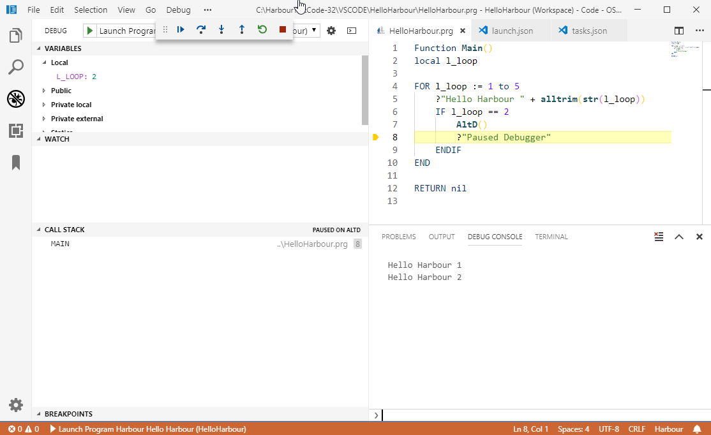
Installing VSCODE
I will highlight below the three different ways of installing VSCODE on Microsoft Windows.
Depending
on which method you use to install VSCODE, you will probably see a
different icon and name to start the program. Here are the three
shortcuts/icons you will get depending on which method you use to
install VSCODE:
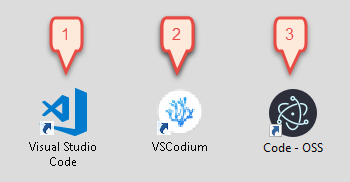
I
recommend method 2, as it is probably the fastest method to install,
using the MIT license and with no usage/error report "tracking" from
Microsoft.
Method 1 - Install using the Microsoft Installer for VSCODE, non-MIT license.
- Go to https://visualstudio.microsoft.com/ and select "Visual Studio Code" / "Download for Windows."
- You will be prompted to download a file like VSCodeUserSetup-*.exe. It could be a 64-bit or 32-bit version, depending on your version of Windows.
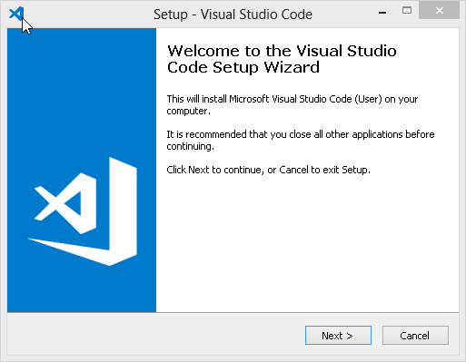
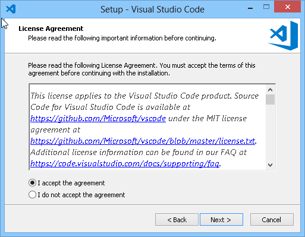
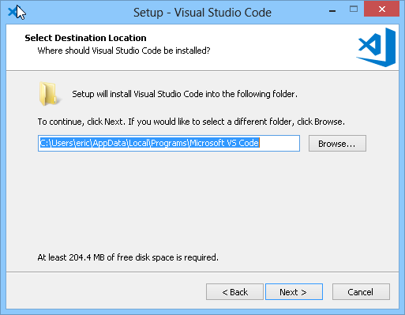
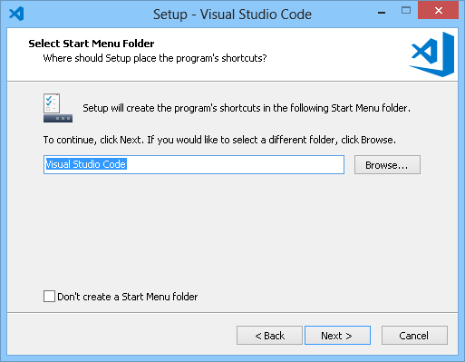
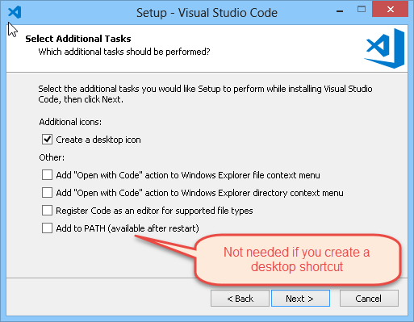
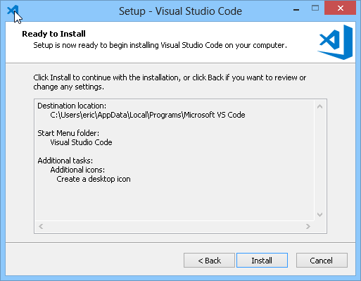
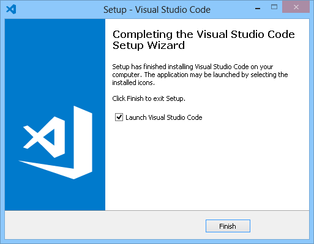
Method 2 - Install binary releases of VS Code without MS branding/telemetry/licensing, called VSCodium.
- See https://en.wikipedia.org/wiki/Visual_Studio_Code#cite_note-80
- As per the instructions at https://chocolatey.org/install:
- Open a Command Prompt as Administrator.
- Paste and run the following: @"%SystemRoot%\System32\WindowsPowerShell\v1.0\powershell.exe" -NoProfile -InputFormat None -ExecutionPolicy Bypass -Command "iex ((New-Object System.Net.WebClient).DownloadString('https://chocolatey.org/install.ps1'))" && SET "PATH=%PATH%;%ALLUSERSPROFILE%\chocolatey\bin"
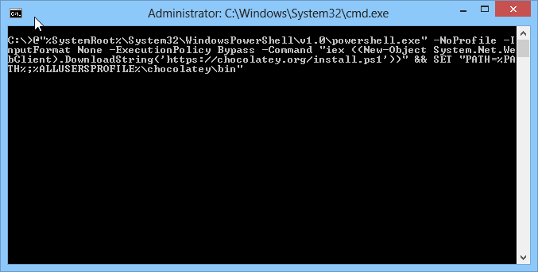
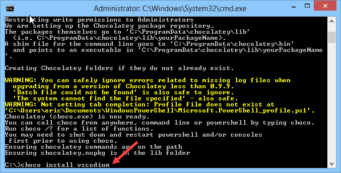
Next, according to https://github.com/VSCodium/vscodium#install-with-choco, run the following command, "choco install vscodium", in the same Command Prompt:
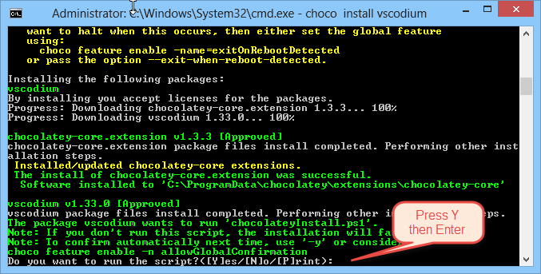
This will run for a few minutes.
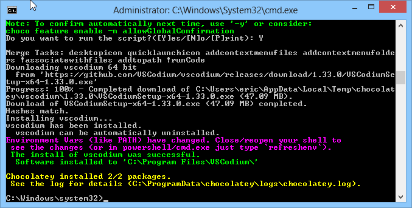
Once completed, the installation is done, and a new Icon (2) is now on your desktop.
Method 3 - Install by building VSCODE from its official source code. MIT license.
- I would advise you to create a Windows 8.1 or greater VM (VMware or VirtualBox).
- Then follow all the instructions starting from the following: https://github.com/Microsoft/vscode/wiki/How-to-Contribute#prerequisites
- Note: Use Python 2.7 and add it to your PATH. I use Option 1 to install the C/C++ compiler.
- Continue using the instructions from https://github.com/Microsoft/vscode/wiki/How-to-Contribute#build-and-run
- There are too many steps for me to make print screens here; an entire section could be devoted to this method. This is the method I chose to use for my main development machine.
- Once all the steps are done, copy the entire folder C:\vscode\.build\electron to your host machine, including subfolders.
- The VSCODE program file is "Code - OSS.exe"
Main Concepts of VSCODE
VSCODE
was designed to help developers code regardless of the computer
language they use. It was intended to be highly customizable: color
themes, keyboard/key mapping/bindings and extensions can all be
modified.
Microsoft is trying to make it very
appealing to switch to VSCODE from any of the other major code editors,
like Sublime Text, Atom, Eclipse, and Notepad++.
In this section, we will review the following VSCODE's main concepts:
- Color Themes
- Folders and Workspaces
- Extensions
- Commands
- Keybindings
- Settings
- Tasks
- Debugger Launch profiles
Color Themes
When you start VSCODE for the first time, you will notice everything is dark:
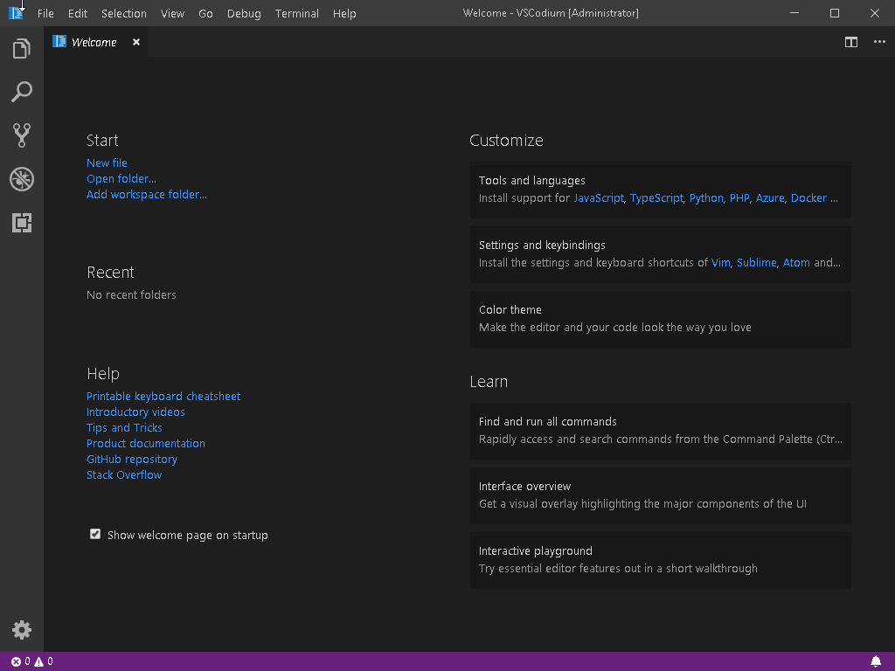
You can change that immediately by selecting a different Color Theme.
Press
Ctrl+Shift+P (when you have VSCODE in focus) to open an entry field
where you can enter any commands (Show All Commands), then type "color
theme" and select "Preferences: Color Theme." I would advise you to
select one of the "light themes."
For the
purpose of this article, I am choosing "Light (Visual Studio)," but I
will demonstrate later how to install other themes.
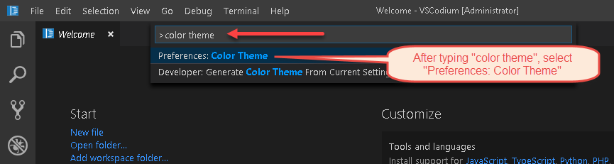
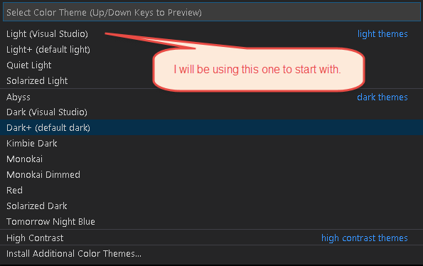
And below is how VSCODE looks with a light theme. See the notes concerning the main layout:
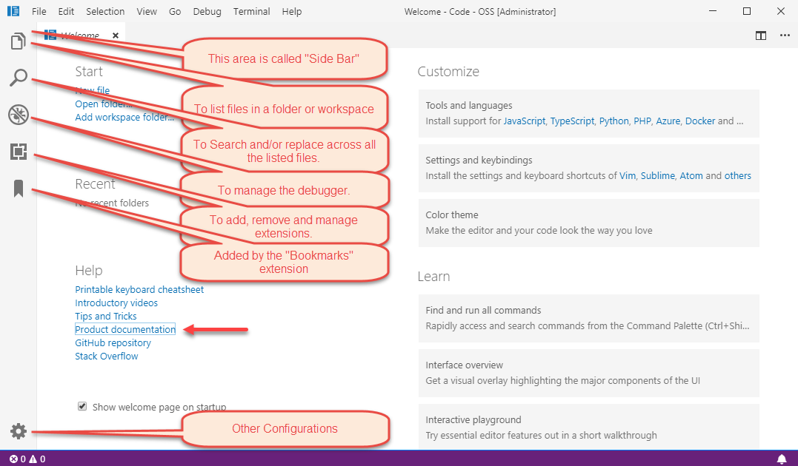
If you are curious, you can start right away by reading some documentation at: https://code.visualstudio.com/docs#vscode
Folders and Workspaces
There are no Project or Solution files in VSCODE. Those concepts are specific to the language you use.
You
usually you want to "Open" a folder. This means focusing VSCODE on that
folder, so it can list the files and its sub-folders. As soon as you
"Open" a folder, VSCODE creates a sub-folder, .vscode, where it will maintain a few configuration files.
You may convert an opened folder to a workspace.
A workspace is simply a file with the extension ".code-workspace"
stored in that folder where workspace-specific settings are kept, and it
is a method to link multiple folders in that workspace. Very few people
seem to be using workspaces to manage multiple folders. Most of the
time, workspaces are used to overwrite default settings. Having
sub-folders does not require to set them up in a workspace.
Extensions
Extensions can be loaded from the marketplace. In an upcoming section, I will show the two main methods to install extensions.
The
purpose of extension is to enhance VSCODE, and basically transform it
from a plain text editor to full IDE. As of early 2019, there are over
10,000 popular extensions. Any developer can create extensions, and as
in most packet/module managers, there are reviews and ratings of all
these extensions.
The following are just a few of the extensions that are available to emulate other editors:
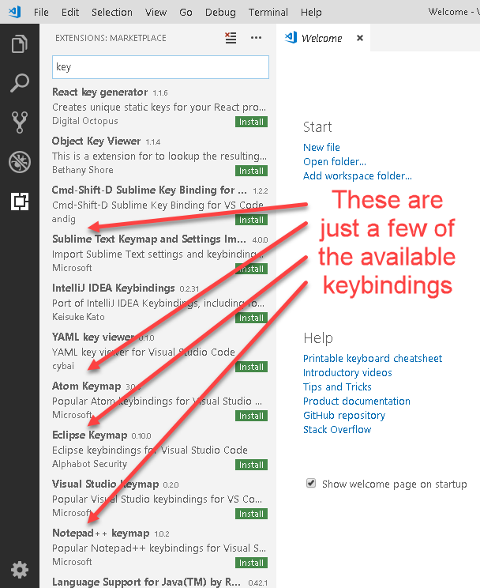
Commands
Everything that can be done in VSCODE happens by calling a command. Press Ctrl+Shift+P to search the list of commands.
There
is no complete documentation of all the commands, but at least you can
view them by reviewing the default keybindings listed below (Open
Default Keyboard Shortcuts (JSON)).
Keybindings
Keybindings are simply keyboard shortcuts. These are user-specific... never folder or workspace specific.
A
Keybinding has a label (combination of keys to press), a command to
execute, and a "when" which specifies under which state the keybinding
will work. The same keybinding label (keys sequence) can be defined, as
long as the "when" is different.
There is a
default list of keybindings that comes with VSCODE. To see the list,
press Ctrl+Shift+P to search for "Open Default Keyboard Shortcuts
(JSON)".
If you enter "Keyboard Shortcuts" in the command search field (Ctrl+Shift+P), you will see the following 3 options:
- Open Default Keyboard Shortcuts (JSON)
This will display a read-only list of default key bindings, but the list is not completely accurate. If you enable some extensions, it will alter this list of "default" keybindings.
This is a excellent way to see all the possible commands VSCODE has. If you scroll to the bottom of the list, you can also see any unassigned (to keybindings) commands.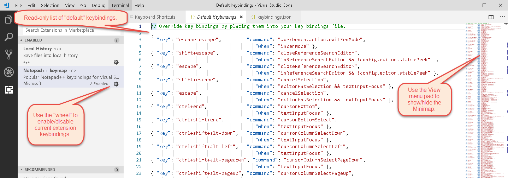
- Open Keyboard Shortcuts
Current list of active keybindings, Default + User. This list can be searched, but not modified, from here.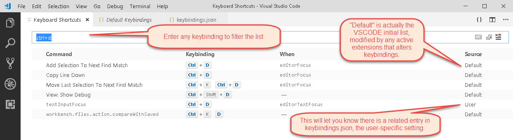
- Open Keyboard Shortcuts (JSON)
This will open the keybindings.json file, located in the user-specific folder "C:\Users\<WindowsUsername>\AppData\Roaming\<"Visual Studio Code" or "VSCodium" or "Code - OSS">\User\keybindings.json"
This method adds, removes, and edits user-specific keybindings.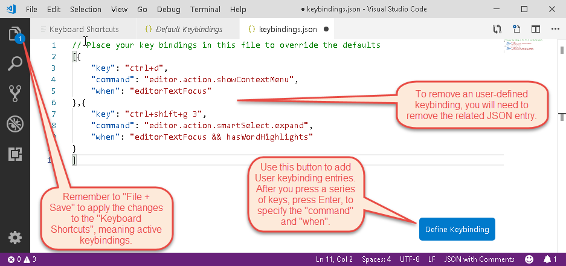
Settings
Settings can be VSCODE-specific or extension-specific.
Following
the VSCODE documentation, there are only 3 levels of settings: Program
Default settings, User settings and Folder settings.
Yet after doing some additional research, if a workspace is opened, it appears to provide a 4th level of settings.
If the same setting exists in multiple levels, VSCODE will use the following rules to decide which level to use:
- Settings entered at the Folder level have precedence over any other levels.
- Settings entered at the Workspace level have precedence over the User level.
- Settings entered at the User level have precedence over the Program Default level.
All settings are stored as JSON strings.
User settings are stored in the following location:
"C:\Users\<WindowsUsername>\AppData\Roaming\<"Visual Studio Code" or "VSCodium" or "Code - OSS">\User\settings.json
Substitute <WindowsUsername> with the Windows logged-in user name.
Substitute
<"Visual Studio Code" or "VSCodium" or "Code - OSS"> with the one
folder related to the type of install you used.
You can also access that file by pressing Ctrl+Shift+P and enter "Open Settings (JSON)"
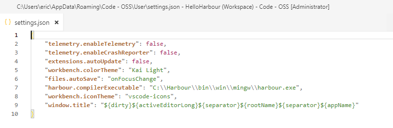
- Lines 2 and 3 are used to turn off telemetry, meaning tracking by Microsoft.
- Line 4 will prevent auto-updates of extensions.
- Line 6 will enable the auto-save of changes as soon as you move away from any editing areas.
- Line 9 will allow you to display the full-path of file in focus, and if any changes are pending to be saved.
Workstation settings are stored inside the .code-workspace file, which is stored in the original workspace folder.
I
could not find a Ctrl+Shift+P way to open the .code-workspace file. The
easiest method to configure workstation settings is to navigate to that
file, and simply open it.
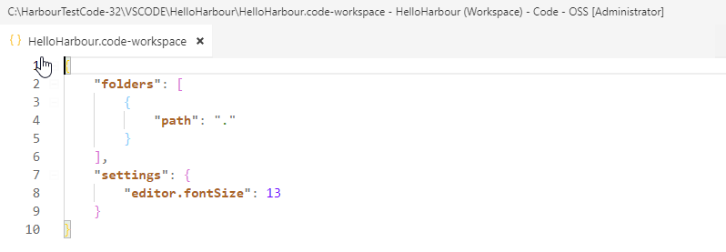
- Workspace settings are stored starting at line 7.
Folder settings are stored in the settings.json file, which is stored in the .vscode folder, which is inside the current opened folder.
I could not find a Ctrl+Shift+P way to open the .code-workspace file. The best is to navigate to the file and simply open it.
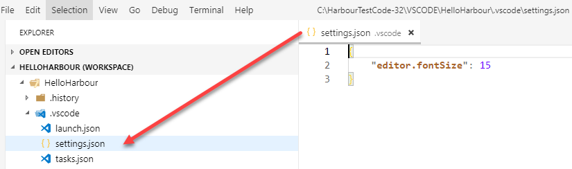
- Line 2 will take precedence over line 8 from the workspace setup file above.
Program Default settings are stored internally, but are claimed to be in a file "defaultSettings.json", which I was not able to locate.
Active
Extensions can also alter some settings or add their own settings. To
see this level of settings, press Ctrl+Shift+P and enter "Open Default
Settings (JSON)".
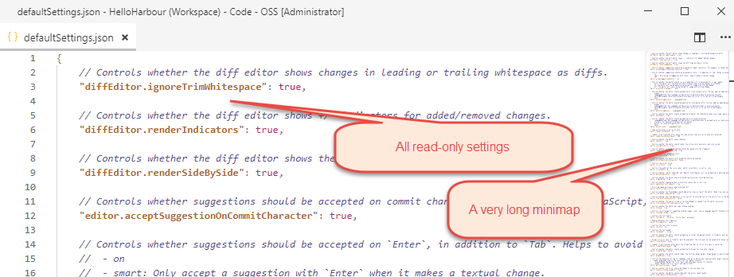
If
you press Ctrl+Shift+P and enter "Open User Settings", you will see a
user friendly UI that will allow you to edit most settings in different
levels:
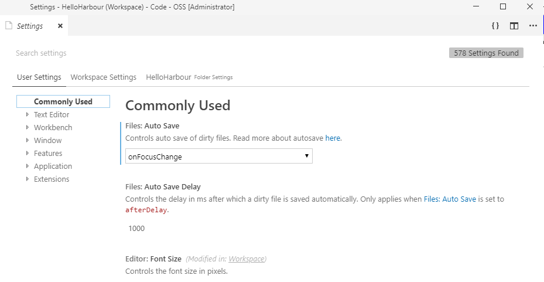
Tasks
Tasks
are methods to execute external programs and have them behave as if
they are part of your copy of VSCODE. This is basically a way to enhance
the editor to become an IDE (Integrated Development Environment). Tasks
help fulfill the Integrated part of the IDE acronym. Task have to be defined inside a tasks.json file located inside the sub-folder .vscode.
Hence, tasks are defined at the level of Folders, and therefore also
Workspaces. For a detail description about how they work, refer to https://code.visualstudio.com/docs/editor/tasks.
The
following is the configuration file for 2 tasks we will use later to
automate the debug and build process of Harbour programs.
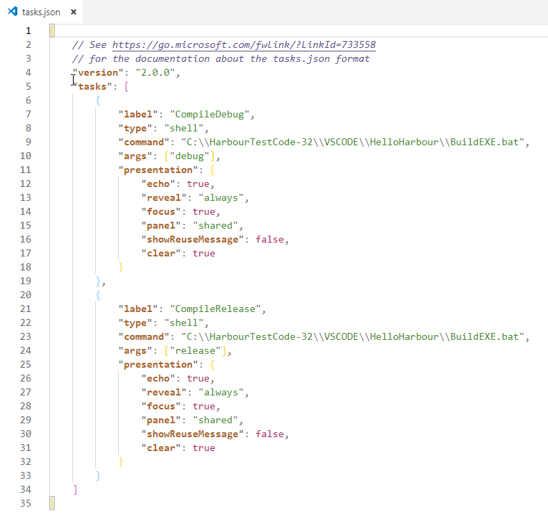
There are 3 ways to start a Task:
1. Press Ctrl+Shift+P and enter "Run Task" to select a task to execute.
2. Have a keybinding to start a task.
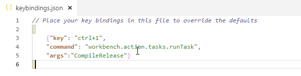
Please
note that although keybindings are User-specific, you could define the
same Task (name) in different Folders or Workspace, and so have the
keybinding become Folder aware.
3. Have the debugger call the task as specified in the launch.json settings.
Debugger Launch profiles
VSCODE
has a built in debugger. But since VSCODE is language-agnostic,
configuration settings are needed to tell the debugger how to run.
This configuration file is named launch.json and is stored in the .vscode sub-folder.
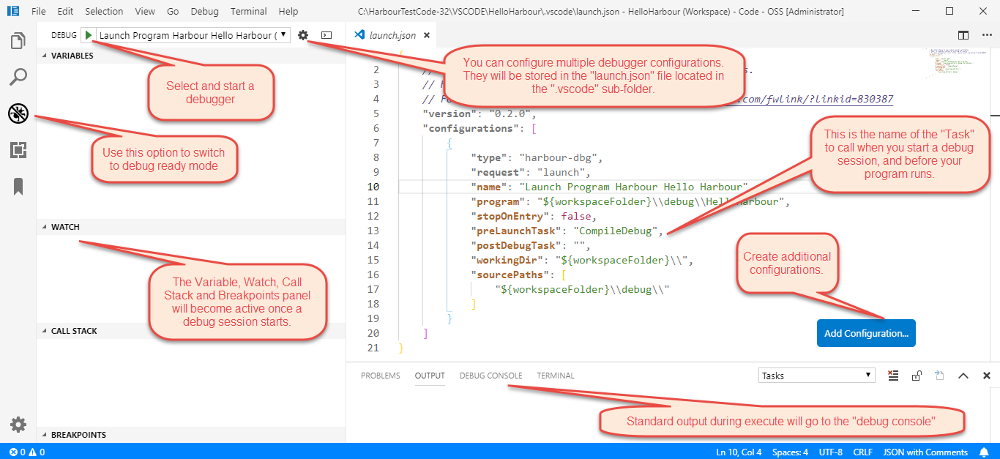
Additional Information
If
you add the folder where the VSCODE executable is located in your PATH,
from any command prompt prompt, you could call VSCODE with a "." as
parameter.
The VSCODE executable could be one of the
following, depending of the method you used to install it: "code.exe",
"VSCodium.exe" or "code - OSS.exe".
For example, entering the following C:\Test>code . would start VSCODE and open the C:\Test folder.
Multiple instances of VSCODE can run at the same time.
The same file can be edited in more than one panel, which may be very practical for large files.
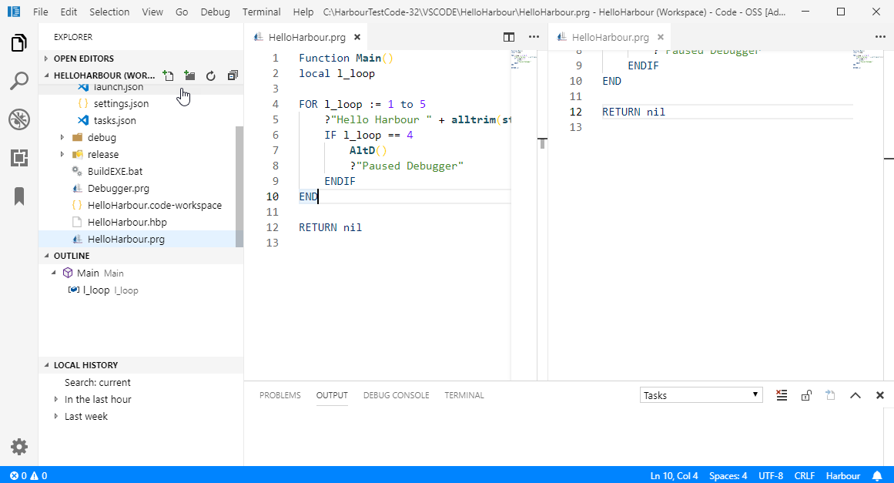
Installing Extensions
As I mentioned earlier, there are 2 methods to install extensions. Lets call them Automated and Manual methods.
The Automated method can be triggered from 2 places: inside VSCODE or from the marketplace web site, https://marketplace.visualstudio.com/vscode.
If you installed VSCODE by building from source, you will only be able to use the "Manual" method.
1.1. "Automated" extension installs from within VSCODE
Simple select the extension icon in the "Side Bar," search for extension, and install.
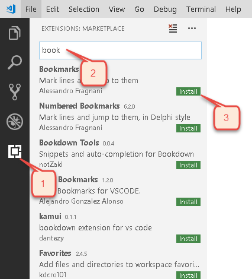
1.2 "Automated" extension installs from the marketplace web site, https://marketplace.visualstudio.com/vscode.
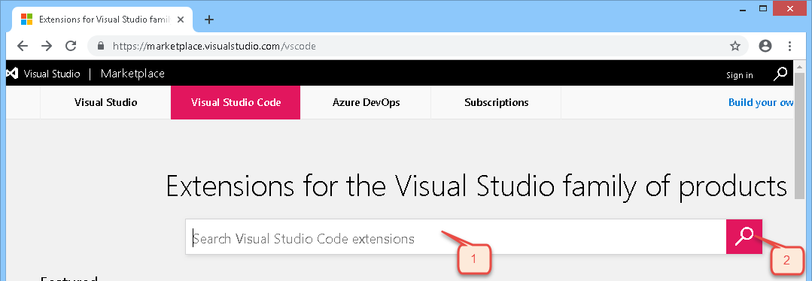
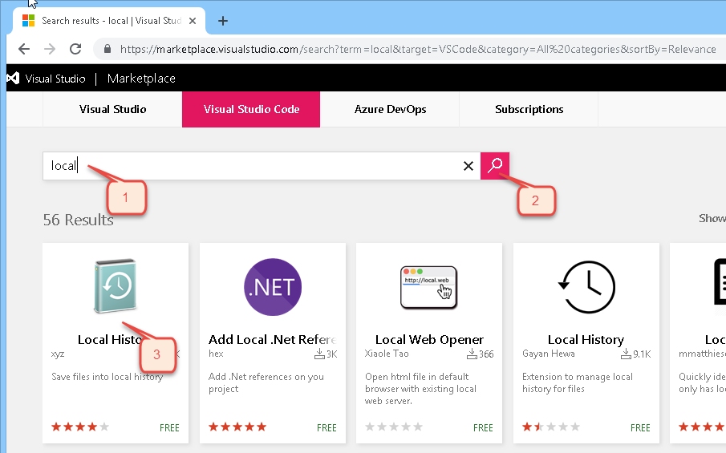
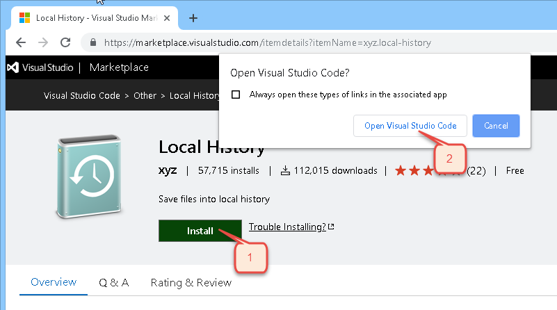
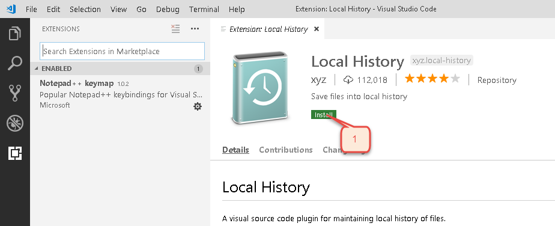
You may need to reload VSCODE for the extension to be activated. Press Ctrl+Shift+P and enter "reload window".
If you don't want VSCODE to auto-update extensions, add "extensions.autoUpdate":false in the User "settings.json" file.
You can also change the extension version as follows:
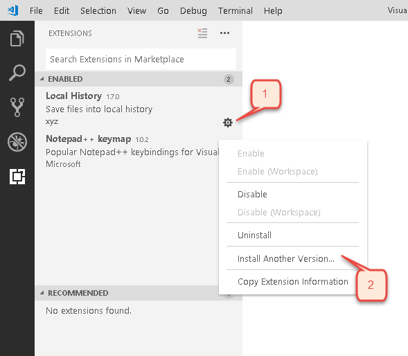
2. "Manual" extension installs
This
is the only method to install extensions if you installed VSCODE by
building it from source code. Extensions are actually files with the
extension ".vsix". You can download them from the marketplace.
Use the same method as in step 1.2 above to locate an extension from the marketplace, then download the ".vsix".
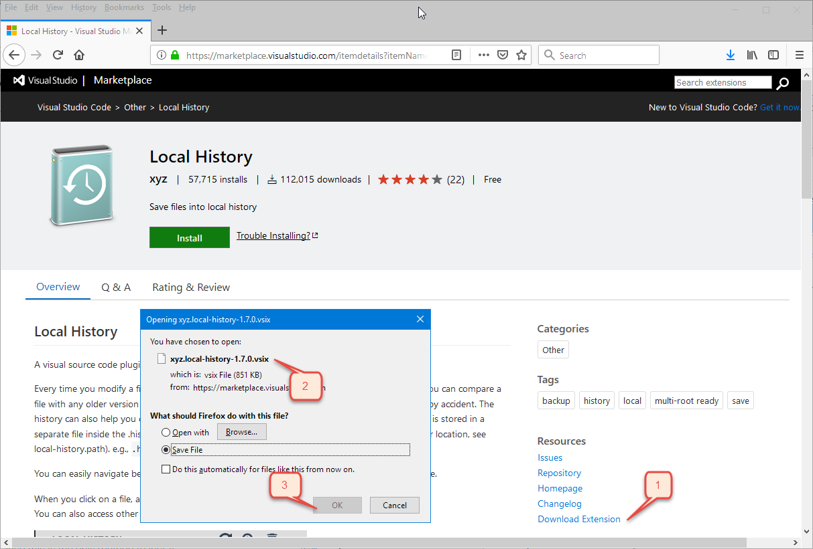
I
would advise you to archive any ".vsix" files you download (since they
are version-specific), and in case you want to revert to a previous
version, this is the best way to ensure that's feasible. The marketplace
only provides you the latest version, which could have a flaw.
If you are curious to see the content of a ".vsix" file, simply replace the extension to ".zip" and extract it.
The next step is to do the actual importing of the extension inside of VSCODE.
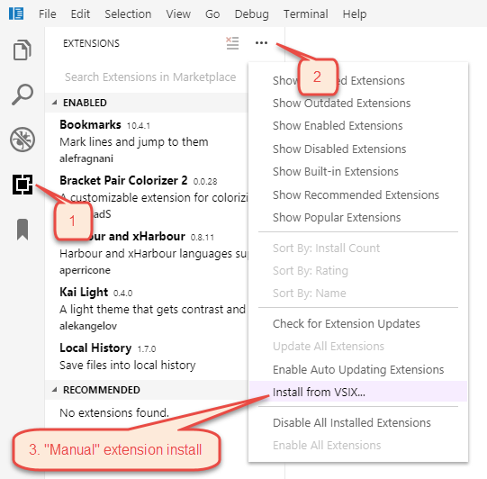
Setting up the Harbour Extension
At
minimum, we need to install the Harbour extensions by Antonino
Perricone. To do so, choose one of the extension install methods from
the previous section. I usually recommend the "Manual" method.
Go to https://marketplace.visualstudio.com/items?itemName=aperricone.harbour to download the extension, then install it.
You may need to reload VSCODE by pressing Ctrl+Shift+P and entering "reload window"
Afterwards, use the following steps:
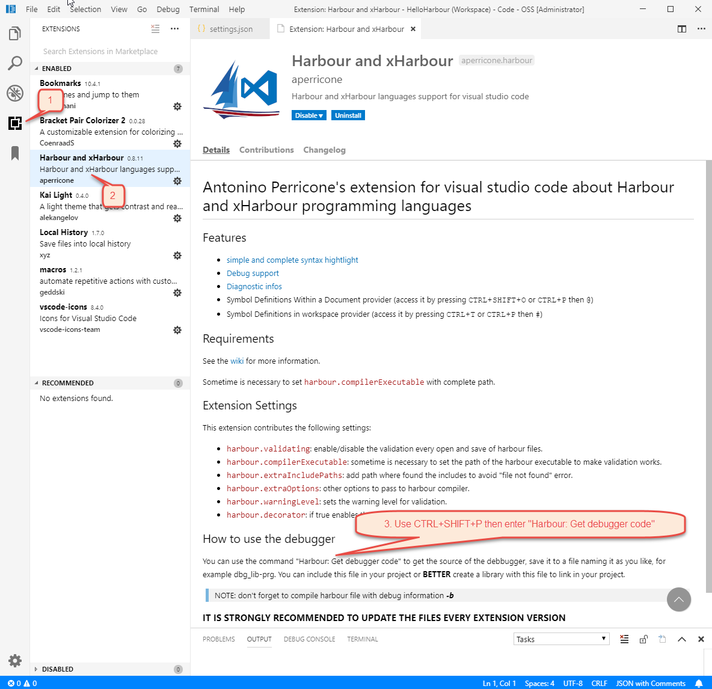
As
per step 3 above, save the Harbour debugger source code to a file. I
choose "debugger.prg". That file will need to be included in your
Harbour project file.
You should probably redo these steps after any updates of the Harbour extension.
Although
we will be using a Task to call HBMK2, we should still let the
extension know where your copy of harbour.exe is located.
Open the "settings.json" (Ctrl+Shift+P "Open Settings (JSON)"), and add the lines:
"harbour.compilerExecutable": "C:\\Harbour\\bin\\win\\mingw\\harbour.exe",
"harbour.extraOptions": "-iC:\\Harbour\\include",
This
is assuming you have your computer set according to the prerequisite.
Please use double back slashes, as opposed to single ones. This is due
to a json format restriction.
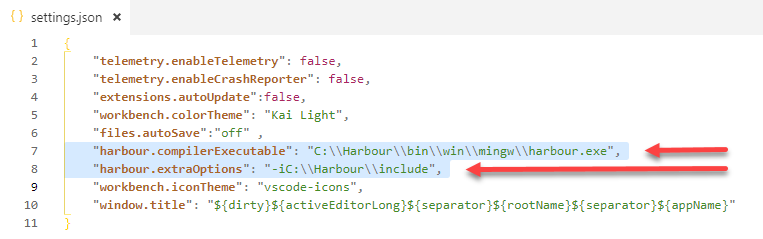
If you are using Acronis Backup, you must disable the Windows service
"Acronis Cyber Protection Service". Set the service to start "Manual"
and reboot.
That Acronis Windows service will conflict with the Debugger by disabling the use of breakpoints.
That Acronis Windows service will conflict with the Debugger by disabling the use of breakpoints.
Additional Extensions and Tools
The
following is a list of my favorite extensions. Some are suggestions
from Antonino Perricone himself. Others I found via YouTube tutorials
and VSCODE extension review web sites.
Kai Light Accent
A couple of nice, light color themes. Very useful, especially when you create some documentation.
https://marketplace.visualstudio.com/items?itemName=alekangelov.alek-kai-theme
https://marketplace.visualstudio.com/items?itemName=alekangelov.alek-kai-theme
Has an icon even for Harbour.
https://marketplace.visualstudio.com/items?itemName=vscode-icons-team.vscode-icons
NotePad++ Keybindings
https://marketplace.visualstudio.com/items?itemName=vscode-icons-team.vscode-icons
NotePad++ Keybindings
Useful if you are already accustomed to the NotePad++ keyboard shortcuts.
https://marketplace.visualstudio.com/items?itemName=ms-vscode.notepadplusplus-keybindings
Bookmarks
https://marketplace.visualstudio.com/items?itemName=ms-vscode.notepadplusplus-keybindings
Bookmarks
Bracket Pair Colorizer 2
Bracket, parentheses.... Pair colorizer.
Local History
A must have, especially if you have "files.autoSave" set to all but not "off", in "settings.json".
https://marketplace.visualstudio.com/items?itemName=xyz.local-history
https://marketplace.visualstudio.com/items?itemName=xyz.local-history
Tasks
This extension loads VSCode tasks into status bar.
https://marketplace.visualstudio.com/items?itemName=actboy168.tasks
https://marketplace.visualstudio.com/items?itemName=actboy168.tasks
Setting up a HelloHarbour Program
Now that VSCODE is Harbour language aware, it's time to create a HelloHarbour (as previously mentioned, not HelloWorld) program.
I will show you the steps for the 32-bit compiler, but all is also applicable for the 64-bit one:
Create the following folder structure: C:\HarbourTestCode-32\VSCODE\HelloHarbour\
Start
VSCODE, and use the "File" / "Open Folder ..." menu option and select
the folder "C:\HarbourTestCode-32\VSCODE\HelloHarbour" .
This will create the sub-folder "C:\HarbourTestCode-32\VSCODE\HelloHarbour\.vscode\"
Then use the "File" / "Save Workspace As ..." menu option and enter the name "HelloHarbour".
This will create a file "C:\HarbourTestCode-32\VSCODE\HelloHarbour\HelloHarbour.code-workspace".
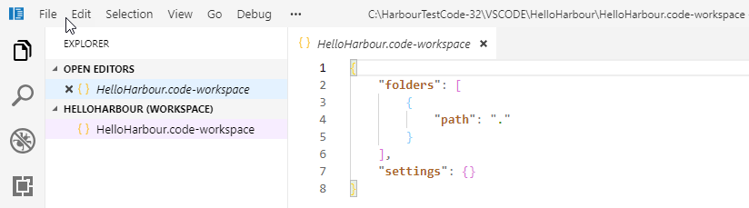
Place
in the folder "C:\HarbourTestCode-32\VSCODE\HelloHarbour\" the file
"Debugger.prg" created from the instructions in the previous section.
Create the following file in the "C:\HarbourTestCode-32\VSCODE\HelloHarbour\" folder.
| File: HelloHarbour.prg |
Function Main()local l_loopFOR l_loop := 1 to 5 ?"Hello Harbour " + alltrim(str(l_loop)) IF l_loop == 4 AltD()?"Paused Debugger" ENDIFENDRETURN nil
Create
the following file in the "C:\HarbourTestCode-32\VSCODE\HelloHarbour\"
folder. This file is the equivalent of a makefile, but specific to the
HBMK2 build tool.
To learn more about HBMK2, visit the following: https://github.com/harbour/core/blob/master/utils/hbmk2/doc/hbmk2.en.md
| File: HelloHarbour.hbp |
-hbexe-inc -trace -gtcgi HelloHarbour.prgDebugger.prg
We
also need to add the following file in the same folder. This will be
used by some VSCODE task we are going to create to build debug and
release versions of HelloHarbour.exe.
This
batch file requires modification if you installed a different version of
the C compiler, or are trying to build another Harbour project.
| File: BuildEXE.bat |
@echo offif %1. == . goto MissingParameterif %1. == debug. goto GoodParameterif %1. == release. goto GoodParameterecho You must send "debug" or "release" as parametergoto End:GoodParameterset PATH=C:\Program Files (x86)\mingw-w64\i686-8.1.0-win32-dwarf-rt_v6-rev0\mingw32\bin;C:\Harbour\bin\win\mingw;C:\HarbourTools;%PATH%set HB_COMPILER=mingwset HB_PATH=C:\HarbourC:md "C:\HarbourTestCode-32\VSCODE\HelloHarbour\%1\"cd "C:\HarbourTestCode-32\VSCODE\HelloHarbour\%1\" if %1 == debug ( hbmk2 ..\HelloHarbour.hbp -b ) else ( hbmk2 ..\HelloHarbour.hbp)goto End:MissingParameterecho Missing Parameter:End
To debug our HelloHarbour program, we need to set up a Task and the Launch Settings first.
In actuality, we are going to set up 2 tasks, to purposely create the concept of debug and release builds.
Press
Ctrl+Shift+P and enter "configure Task", and select "Create tasks.json
file from template" then select "Others". Otherwise, you could create
new a file "tasks.json" in the".vscode" sub-folder, using the "File" /
"New File" menu option, while being focused in the ".vscode".
The tasks.json
file will define three tasks: CompileDebug, CompileRelease and
RunRelease. The first two tasks will instruct VSCODE to call the
BuildEXE.bat batch file with the parameter "debug" or "release".
RunRelease will first call the CompileRelease, then execute the newly
compiled program.
For more information about tasks, visit the following: https://code.visualstudio.com/docs/editor/tasks
The
first two tasks will call the BuildEXE.bat batch file we create before.
The only real differences between the two tasks are their name and the
argument passed to the batch file.
The "presentation" section of the configuration will instruct VSCODE how to integrate the output of the batch file.
| File: tasks.json |
{ // See https://go.microsoft.com/fwlink/?LinkId=733558 // for the documentation about the tasks.json format "version": "2.0.0", "tasks": [ { "label": "CompileDebug", "type": "shell", "command": "${workspaceFolder}\\BuildEXE.bat", "args": [ "debug"], "presentation": { "echo": true, "reveal": "always", "focus": true, "panel": "shared", "showReuseMessage": false, "clear": true } }, { "label": "CompileRelease", "type": "shell", "command": "${workspaceFolder}\\BuildEXE.bat", "args": [ "release" ], "presentation": { "echo": true, "reveal": "always", "focus": true, "panel": "shared", "showReuseMessage": false, "clear": true } }, { "label": "RunRelease", "dependsOn": [ "CompileRelease" ], "type": "shell", "command": "${workspaceFolder}\\release\\HelloHarbour.exe", "presentation": { "echo": true, "reveal": "always", "focus": true, "panel": "shared", "showReuseMessage": false, "clear": true }, "problemMatcher": [] } ]}
To compile and run the release version of HelloHarbour, press Ctrl+Shift+P, enter "Run Task", and select "RunRelease".
The
next step is to let VSCODE know how to run the debugger. This is done
by creating a launch configuration, stored in the "launch.json" file,
and also located in the .vscode sub-folder.
Press
Ctrl+Shift+P and enter "launch". Then select "debug: Open launch.json",
followed by "Harbour". Afterwards, replace the default content of the
new launch.json file with the file described below.
The reference "${workspaceFolder}" is a VSCODE variable, that will refer to the starting workspace folder.
The option "terminalType" can be used to specify where the output will be sent to:
- "none" = "DEBUG CONSOLE" panel in VSCODE
- "integrated" = "TERMINAL" panel in VSCODE
- "external" = A new external console window
| File: launch.json |
{ // Use IntelliSense to learn about possible attributes. // Hover to view descriptions of existing attributes. // For more information, visit: https://go.microsoft.com/fwlink/?linkid=830387 "version": "0.2.0", "configurations": [ { "type": "harbour-dbg", "request": "launch", "name": "Launch Program Harbour Hello Harbour", "program": "${workspaceFolder}\\debug\\HelloHarbour", "stopOnEntry": false, "terminalType": "none","preLaunchTask": "CompileDebug", "postDebugTask": "", "workingDir": "${workspaceFolder}\\", "sourcePaths": [ "${workspaceFolder}\\debug\\" ] } ]}
As the last configuration step, let's create a key binding to start the "compile for release" task.
If, for example, you wanted to set the Ctrl+1 key combination to build your release exe, simply edit your keybindings.json file (see instruction in preview section) and add the following entry:
{"key": "ctrl+1","command": "workbench.action.tasks.runTask","args":"CompileRelease"}
The following is a list of files you should have from following all the instructions above:
C:\HarbourTestCode-32\VSCODE\HelloHarbour\HelloHarbour.code-workspace
C:\HarbourTestCode-32\VSCODE\HelloHarbour\HelloHarbour.hbp
C:\HarbourTestCode-32\VSCODE\HelloHarbour\HelloHarbour.prg
C:\HarbourTestCode-32\VSCODE\HelloHarbour\Debugger.prg
C:\HarbourTestCode-32\VSCODE\HelloHarbour\BuildEXE.bat
C:\HarbourTestCode-32\VSCODE\HelloHarbour\.vscode\launch.json
C:\HarbourTestCode-32\VSCODE\HelloHarbour\.vscode\settings.json
C:\HarbourTestCode-32\VSCODE\HelloHarbour\.vscode\tasks.json
C:\HarbourTestCode-32\VSCODE\HelloHarbour\HelloHarbour.hbp
C:\HarbourTestCode-32\VSCODE\HelloHarbour\HelloHarbour.prg
C:\HarbourTestCode-32\VSCODE\HelloHarbour\Debugger.prg
C:\HarbourTestCode-32\VSCODE\HelloHarbour\BuildEXE.bat
C:\HarbourTestCode-32\VSCODE\HelloHarbour\.vscode\launch.json
C:\HarbourTestCode-32\VSCODE\HelloHarbour\.vscode\settings.json
C:\HarbourTestCode-32\VSCODE\HelloHarbour\.vscode\tasks.json
Debugging HelloHarbour
And now, let's do the most important part of our job: debug HelloHarbour.
Ensure you have the HelloHarbour workspace open, then do the following:
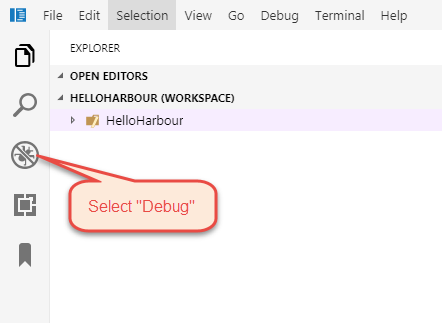
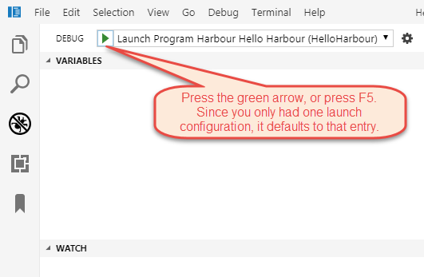
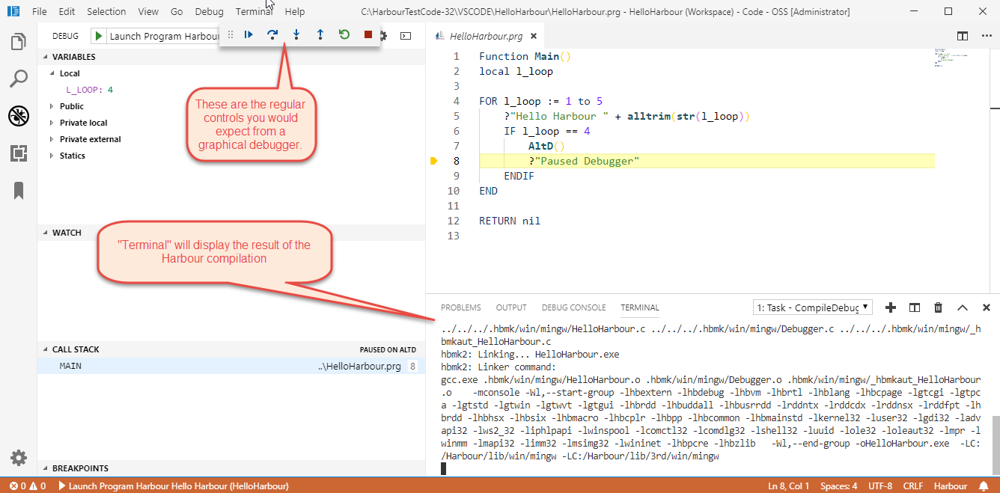
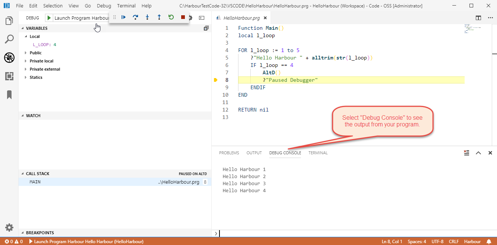
List of files created during debug build:
C:\HarbourTestCode-32\VSCODE\HelloHarbour\debug\HelloHarbour.exe
C:\HarbourTestCode-32\VSCODE\HelloHarbour\debug\.hbmk\win\mingw\Debugger.c
C:\HarbourTestCode-32\VSCODE\HelloHarbour\debug\.hbmk\win\mingw\Debugger.o
C:\HarbourTestCode-32\VSCODE\HelloHarbour\debug\.hbmk\win\mingw\HelloHarbour.c
C:\HarbourTestCode-32\VSCODE\HelloHarbour\debug\.hbmk\win\mingw\HelloHarbour.o
C:\HarbourTestCode-32\VSCODE\HelloHarbour\debug\.hbmk\win\mingw\_hbmkaut_HelloHarbour.c
C:\HarbourTestCode-32\VSCODE\HelloHarbour\debug\.hbmk\win\mingw\_hbmkaut_HelloHarbour.o
List of files created during release build:
C:\HarbourTestCode-32\VSCODE\HelloHarbour\release\HelloHarbour.exe
C:\HarbourTestCode-32\VSCODE\HelloHarbour\release\.hbmk\win\mingw\Debugger.c
C:\HarbourTestCode-32\VSCODE\HelloHarbour\release\.hbmk\win\mingw\Debugger.o
C:\HarbourTestCode-32\VSCODE\HelloHarbour\release\.hbmk\win\mingw\HelloHarbour.c
C:\HarbourTestCode-32\VSCODE\HelloHarbour\release\.hbmk\win\mingw\HelloHarbour.o
C:\HarbourTestCode-32\VSCODE\HelloHarbour\release\.hbmk\win\mingw\_hbmkaut_HelloHarbour.c
C:\HarbourTestCode-32\VSCODE\HelloHarbour\release\.hbmk\win\mingw\_hbmkaut_HelloHarbour.o
C:\HarbourTestCode-32\VSCODE\HelloHarbour\debug\HelloHarbour.exe
C:\HarbourTestCode-32\VSCODE\HelloHarbour\debug\.hbmk\win\mingw\Debugger.c
C:\HarbourTestCode-32\VSCODE\HelloHarbour\debug\.hbmk\win\mingw\Debugger.o
C:\HarbourTestCode-32\VSCODE\HelloHarbour\debug\.hbmk\win\mingw\HelloHarbour.c
C:\HarbourTestCode-32\VSCODE\HelloHarbour\debug\.hbmk\win\mingw\HelloHarbour.o
C:\HarbourTestCode-32\VSCODE\HelloHarbour\debug\.hbmk\win\mingw\_hbmkaut_HelloHarbour.c
C:\HarbourTestCode-32\VSCODE\HelloHarbour\debug\.hbmk\win\mingw\_hbmkaut_HelloHarbour.o
List of files created during release build:
C:\HarbourTestCode-32\VSCODE\HelloHarbour\release\HelloHarbour.exe
C:\HarbourTestCode-32\VSCODE\HelloHarbour\release\.hbmk\win\mingw\Debugger.c
C:\HarbourTestCode-32\VSCODE\HelloHarbour\release\.hbmk\win\mingw\Debugger.o
C:\HarbourTestCode-32\VSCODE\HelloHarbour\release\.hbmk\win\mingw\HelloHarbour.c
C:\HarbourTestCode-32\VSCODE\HelloHarbour\release\.hbmk\win\mingw\HelloHarbour.o
C:\HarbourTestCode-32\VSCODE\HelloHarbour\release\.hbmk\win\mingw\_hbmkaut_HelloHarbour.c
C:\HarbourTestCode-32\VSCODE\HelloHarbour\release\.hbmk\win\mingw\_hbmkaut_HelloHarbour.o
Remember
that the file
C:\HarbourTestCode-32\VSCODE\HelloHarbour\debug\HelloHarbour.exe should
not be called directly. The program would stall, waiting for a debugger
to monitor its execution.
Snippets
Code
Snippets: a feature you can ignore when you first start using Visual
Studio Code, but something you will later want to use all the time!
From
the official documentation, "Code snippets are templates that make it
easier to enter repeating code patterns, such as loops or
conditional-statements."
Basically, snippets
are some piece of source code (or other type of text) you can insert
into your own code, with the added following features:
- Specify how your cursor can move around that newly inserted code, making it easier to customize to your needs.
- Have the same text you type appear in multiple places of the newly added code at once.
- Merge some text from a list of built-in variables, like time stamps.
- Specify where your cursor should end up after any snippets editing is done.
Snippets can be defined as global, specific to a (computer) language or specific to a workspace.
If snippets are defined for a workstation, they can also be "scoped" for specific (computer) languages.
Snippets
are called via the IntelliSense engine of VSCODE (meaning as you type
in the editor), or can also be inserted via keybindings (keyboard
shortcuts).
There are two methods to add
snippets: via extensions, or by creating your own. I am more of the
opinion that you should control the snippets definitions yourself, and I
will explain later how to integrate extensions snippets as your own
ones.
The official documentation for snippets is at the following location: https://code.visualstudio.com/docs/editor/userdefinedsnippets
Another good way to get familiar with snippets is to watch some videos on YouTube. For example:
One of those videos also recommend using a tool to make it easier to create your snippet configs: https://snippet-generator.app
Here are some examples of snippet definitions:
| File: harbour.json |
{ // Place your snippets for harbour here. Each snippet is defined under a snippet name and has a prefix, body and // description. The prefix is what is used to trigger the snippet and the body will be expanded and inserted. Possible variables are: // $1, $2 for tab stops, $0 for the final cursor position, and ${1:label}, ${2:another} for placeholders. Placeholders with the // same ids are connected. // Example: // "Print to console": { // "prefix": "log", // "body": [ // "console.log('$1');", // "$2" // ], // "description": "Log output to console" // } "Function Header": { "prefix": "FuncHead", "body":[ "$LINE_COMMENT ========================================================================", "$LINE_COMMENT Name: ${1}", "$LINE_COMMENT Created By: Eric Lendvai", "$LINE_COMMENT Created On: $CURRENT_MONTH/$CURRENT_DATE/$CURRENT_YEAR $CURRENT_HOUR:$CURRENT_MINUTE", "$LINE_COMMENT ========================================================================", "function ${1}()", "${0}", "return (${2})" ], "description": "Basic Function with Header Documentation" }, "Code Change Stamp":{ "prefix": "ccstamp", "body": " $LINE_COMMENT Changed by Eric Lendvai on $CURRENT_MONTH/$CURRENT_DATE/$CURRENT_YEAR $CURRENT_HOUR:$CURRENT_MINUTE Jira: ${1}", "description": "Used to Add some end of line source code change stamp" }, "Do Case Statement": { "prefix": "docase", "body": [ "do case", "case ${1:condition}", "\t", "case ${2:condition}", "\t", "otherwise", "\t", "endcase", "${0}" ], "description": "basic Do/Case structure" }, "If Else Statement": { "prefix": "ifelse", "body": [ "if ${1:condition}", "\t${2}", "else", "\t${3}", "endif", "${0}" ], "description": "basic if/else structure" },}
In
the above example configurations, once you type "FuncHead" in your
harbour source code file, a drop-down will appear for you to
select/confirm that snippet.
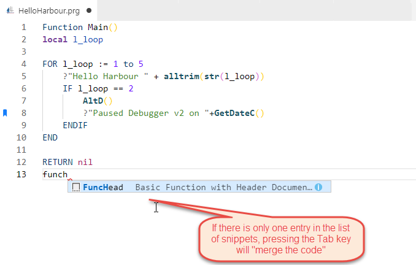
Once you select with your mouse the Enter or Tab key, this is how the snippet code will appear:
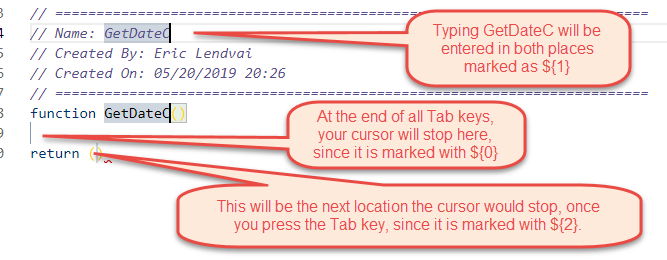
Snippet
entries (tab stops) can also have default text values, be a list of
possible text, or be evaluated from a combination of built-in variables.
Please refer to the documentation for all the details.
One
of the easiest ways to add and manage snippets is to press Ctrl+Shift+P
and search for "snipp" and select "Configure User Snippets."
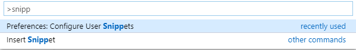
As you can see below, there are 3 types of snippets definition files. They all contains json code that defines snippets.
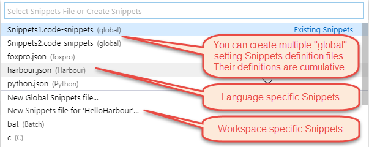
Please add the following line in your main settings.json:
"window.title": "${dirty}${activeEditorLong}${separator}${rootName}${separator}${appName}",
This will help locate the physical location of any files you open, include the above snippets definition files.
Another method to get some snippet definition is to look into some extensions that also provide support for snippets.
For example, there is Foxpro VSCODE extension available in the market place.
Download the .vsix file from the market place. Rename the file by replacing ".vsix" with ".zip", and unpack the file.
Go to https://marketplace.visualstudio.com/items?itemName=NewDataSystems.foxpro and download the extension: NewDataSystems.foxpro-1.4.8.vsix.
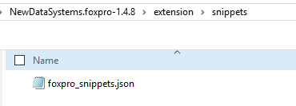
Once you open the foxpro_snippets.json, you will access practical definitions that can also work for harbour.
If
you also work on VFP / FoxPro files, meaning not only harbour files,
you may have conflicts between the harbour and FoxPro extension when
editing PRG files.
To work around this problem, ensure you use
workspace files and by adding the "files.associations" setting you can
instruct VSCODE to use the correct language.
Here is a sample of a harbour-specific workspace file:
| File: HelloHarbour.code-workspace |
{ "folders": [ { "path": "." } ], "settings": { "editor.fontSize": 13, "files.autoSave": "onFocusChange", "files.associations": { "*.prg":"harbour", "*.c":"c" } }}
The next trick is to associate a keybinding with a snippet. This would make it even faster to merge code in your files.
You
can either place the single line snippet definition in the keybinding
definition file, or refer a keybinding to a snippet definition (via
language id and snippet name).
The following is an example of my user keybindings definitions:
| File: keybindings.json |
// Place your key bindings in this file to override the defaults[ {
If
your keybinding refers to a workspace-specific snippet, you will also
need that workspace to be opened. Therefore, the same same keybinding
will insert workspace-specific source code.
VSCode Documentation and Learning Material
The core documentation can be found at: https://code.visualstudio.com/docs/
You can also search for YouTube videos. I would recommend the following: "VS Code Can Do That?! VS Code Tips and Tricks," https://www.youtube.com/watch?v=x5GzCohd4eo
And check out the marketplace for extension: https://marketplace.visualstudio.com/vscode
Conclusion
For
us developers, there is almost nothing more important than to choose an
editor and debugger that will make us as productive as possible, and
will also make coding an enjoyable and rewarding experience.
Please give Visual Studio Code a chance;. take the time to extend it and customize it to your needs.
We
appreciate your interest in the subject matter. Please share your
feedback, tips and tricks, and favorite extensions, so I can continually
update this article and the harbour.wiki website in general, as VSCODE
is still evolving. It's your comments about previous articles that made
this one come to fruition.
And many thanks to Antonino Perricone for such a fantastic Harbour extension, and for providing the technical support necessary to write this article.
The browser did not close this tab. It may have been opened directly instead of from the Articles list. Use Back to Articles.